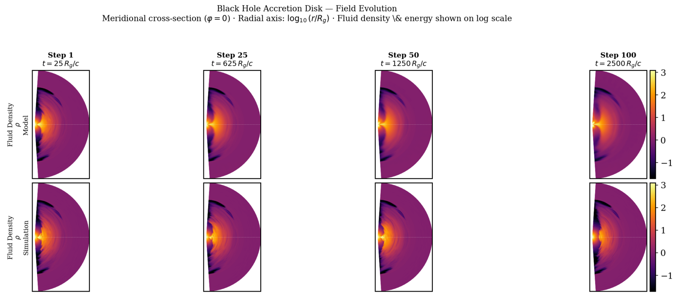

Black Hole Simulation: AI Time-Step Prediction
Physics-informed deep learning for long-horizon black-hole accretion simulations


Project Overview
As a research assistant with Northwestern's NSF-Simons AI Institute for the Sky (SkAI) and Center for Interdisciplinary Exploration and Research in Astrophysics (CIERA), I develop physics-informed machine learning methods to accelerate three-dimensional general relativistic magnetohydrodynamic (GRMHD) simulations.
Approach
- Built on a hybrid 3D U-shaped neural operator that predicts residual changes between simulation states.
- Trained a fine model at a one-step horizon for detailed short-term dynamics and a coarse model at a 25-step horizon for more stable long-range predictions.
- Developed a multiscale inference strategy that combines fine rollouts with coarse-model corrections to reduce accumulated autoregressive error.
- Used physics-informed objectives covering fluid variables, magnetic fields, gradients, divergence constraints, mass conservation, and spectral behavior.
Engineering & Infrastructure
- Implemented the training and evaluation pipeline in Python and PyTorch.
- Ran multi-GPU distributed training with PyTorch Distributed Data Parallel and Slurm on NERSC's Perlmutter supercomputer, with later benchmark work on NCSA Delta.
- Created stride-aware datasets, checkpoint management, development smoke tests, and separate workflows for fine and coarse models.
- Built evaluation tooling for per-variable error, autoregressive rollout accuracy, magnetic divergence, mass drift, shell-integrated profiles, and inference cost.
Fall 2026: Blind Benchmarking
The next phase of the work is a fair, repeatable benchmark for H-AMR black-hole forecasting: given earlier simulation states, how well can a method predict future states? The protocol compares the specialized neural operator with frontier models such as Claude, Gemini, and GPT, plus persistence and mean-state baselines that copy or average the last observed state.
- Give every method the same raw run-5000 input windows, output format, and forecast horizons (1, 10, 25, and 50 steps), including both direct long-horizon prediction and autoregressive rollout.
- Keep the first-pass evaluation blind: prediction models do not receive processed data, evaluation code, metric weights, teammate model internals, or a hidden held-out simulation until the protocol is locked.
- Score methods on more than one error number—numerical skill versus persistence, physical validity (positive density and energy, magnetic divergence, conservation), regional accuracy near the black hole versus the disk and outer halo, and long-horizon stability without oversmoothing turbulence.
- Omit Fourier and spectral metrics from the primary ranking so models trained with those losses are not unfairly favored; keep them as optional diagnostics.
- Built a dry-run benchmark pipeline with isolated blind packets, frozen hashed submissions, and a separate private evaluator. The pilot validates the protocol and is not a final leaderboard.
Technologies
Python, PyTorch, neural operators, distributed data parallel training, Slurm, MPI, NumPy, scientific computing, high-performance GPU computing, and blind model-evaluation protocol design.
Impact
The project models larger time-step transitions to reduce the number of required simulation steps by 10–100× while preserving physical constraints. The multiscale design addresses a central limitation of autoregressive scientific forecasting—small one-step errors compounding over time—and investigates stability across long forecast horizons. The benchmarking layer asks a second question: whether a specialized scientific model actually outperforms strong general-purpose systems and simple baselines under the same physical tests.